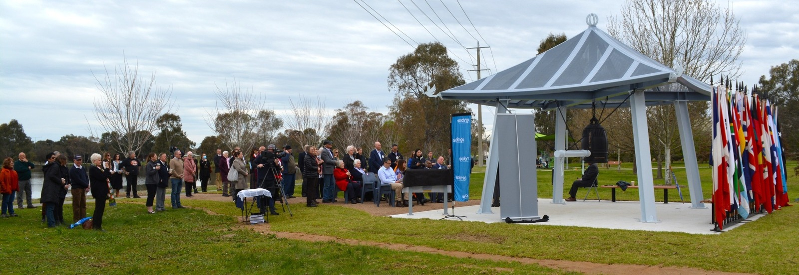
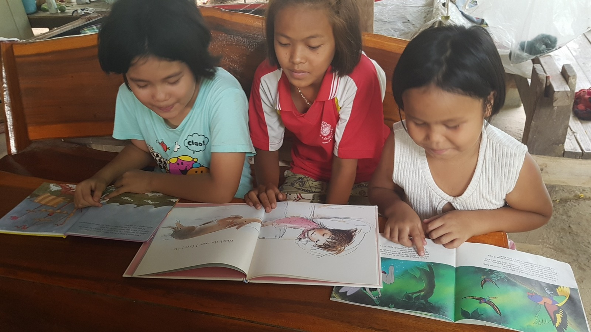
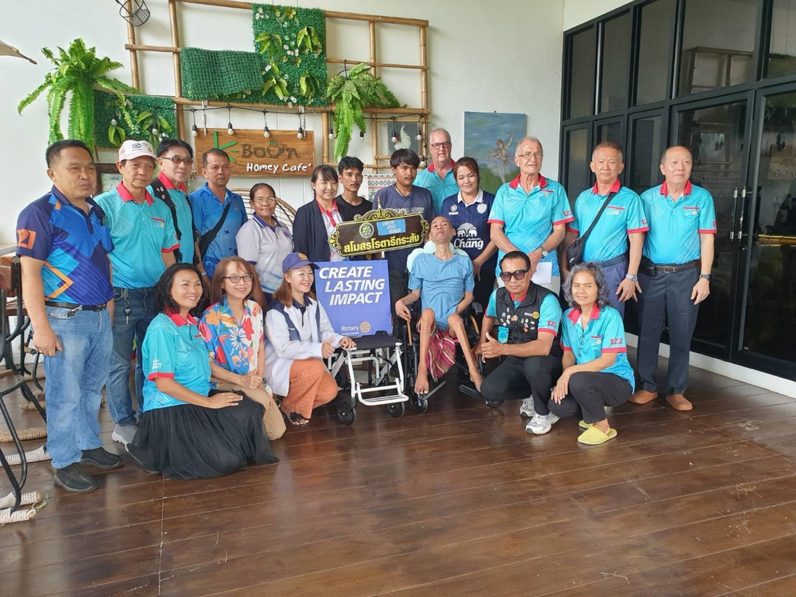
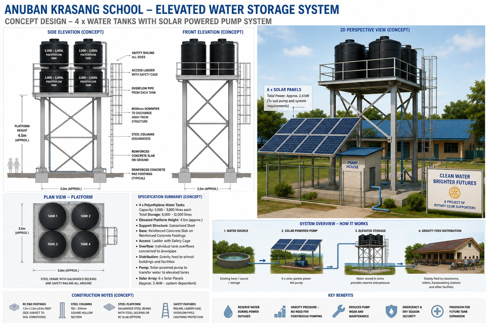

Welcome
Welcome, and thank you for scanning my Rotary card.
Throughout my professional life I have been fortunate to work as an engineer, author, business owner and mentor. Those experiences taught me how to solve problems, manage projects and bring people together to achieve common goals.
Today, my greatest satisfaction comes from applying those same skills through Rotary.
Rotary ISAN – International is an English-speaking satellite club of the Rotary Club of Krasang, District 3340, Thailand. Together with fellow Rotarians, community leaders and international partners, we work to develop projects that create lasting benefits for the communities we serve.
This page shares some of that journey.
Meaningful service is never the work of one person. It is the result of people working together with a shared purpose.
Projects and Partnerships
Every Rotary project begins with a simple question: How can we improve the lives of others?
The answers are rarely found by individuals working alone. They are found through cooperation, friendship and a shared commitment to Service Above Self.

🔔 Rotary Peace Bell – Albury Wodonga
Project Chairman · Project Manager · Designer
The Rotary Peace Bell Project was created to provide a permanent place where students, families and the wider community can pause and reflect on the importance of peace.
Not only peace between nations, but also peace within our homes, our schools, our workplaces and our communities.
The Peace Bell serves as a lasting reminder that every generation has a responsibility to help build a more peaceful world.
Let the sound of this Peace Bell serve as a gentle reminder that the journey towards peace begins within each of us.

📚 Books For Kids
Founder · International Project Coordinator · 2020–2025
Books For Kids was an international cooperation between the Rotary Club of Wodonga West, the Rotary Club of Bangkok and the Rotary Club of Surin.
Working together, the clubs collected and shipped thousands of high-quality English-language picture books from charity shops in Wodonga, Australia, to primary schools throughout Surin Province, Thailand.
For many children, these books opened new opportunities to develop English language skills while discovering the joy of reading.
The project demonstrated what can be achieved when Rotary clubs from different countries work together with a common purpose.

♿ Wheelchair Mobility Project
Rotary ISAN – International · In partnership with the Rotary Club of Krasang · 2026
Restoring mobility means restoring independence, dignity and confidence.
Through a joint community initiative, Rotary ISAN – International and the Rotary Club of Krasang donated wheelchairs to members of the local community whose quality of life could be significantly improved through greater mobility.
The project was a collaborative effort involving Jos Weemaes, Erik van den Bosch and Markus Schulz, working alongside fellow Rotarians and community members.
Although modest in financial terms, the difference made to the recipients cannot be measured in money.
Service Above Self is most meaningful when it is achieved together.

💧 Anuban Krasang Water Sustainability Project
Currently in the Feasibility Stage
Clean, reliable water is essential for every school.
Rotary ISAN – International and the Rotary Club of Krasang are developing a long-term sustainability project for Anuban Krasang School in Buriram Province.
The concept combines elevated water storage, solar-powered pumping and renewable energy into a practical system that will not only improve the school's water security but also provide students with an opportunity to learn about environmental sustainability and responsible resource management.
The project is currently seeking support from local and international Rotary clubs, businesses and philanthropic organisations.
Our vision is simple: to create a sustainable project that benefits today's students while demonstrating practical solutions for future generations.
Recent Project Activities by Rotary ISAN – International
This section will continue to grow as Rotary ISAN – International develops new projects and strengthens existing partnerships.
The Rotary journey is never complete. Every successful project creates new opportunities to serve our communities and build lasting international friendships.
About Jos
I believe that successful projects are built on trust, cooperation and careful planning.
Whether working as an engineer, author or Rotarian, my approach has always been the same: bring good people together, define the objective, work as a team and finish the project well.
Engineer
Author
Rotarian
Mentor